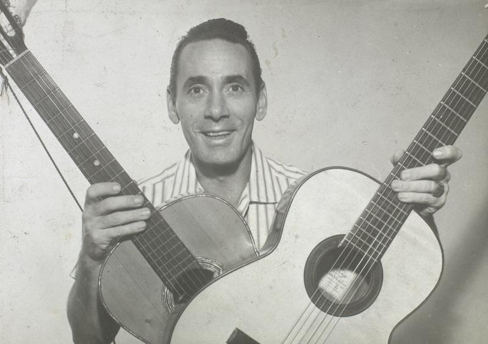

Naquela Mesa:


Aqui tem só as Melhores de todos os Tempos e de Todas as Épocas!!!
Naquela mesa ele sentava sempre
E me dizia sempre o que é viver melhor
Naquela mesa ele contava histórias
Que hoje na memória eu guardo e sei de cor
Naquela mesa ele juntava gente
E contava contente o que fez de manhã
E nos seus olhos era tanto brilho
Que mais que seu filho, eu fiquei seu fã
Eu não sabia que doía tanto
Uma mesa num canto, uma casa e um jardim
Se eu soubesse quanto dói a vida
Essa dor tão doída não doía assim
Agora resta uma mesa na sala
E hoje ninguém mais fala no seu bandolim
Naquela mesa tá faltando ele
E a saudade dele tá doendo em mim
Naquela mesa tá faltando ele
E a saudade dele tá doendo em mim
Agora resta uma mesa na sala
E hoje ninguém mais fala no seu bandolim
Naquela mesa tá faltando ele
E a saudade dele tá doendo em mim
Naquela mesa tá faltando ele
E a saudade dele tá doendo em mim
Eu não sabia que doía tanto
Uma mesa num canto, uma casa e um jardim
Se eu soubesse quanto dói a vida
Essa dor tão doída não doía assim
Agora resta uma mesa na sala
E hoje ninguém mais fala no seu bandolim
Naquela mesa tá faltando ele
E a saudade dele tá doendo em mim
Naquela mesa tá faltando ele
E a saudade dele tá doendo em mim
Contemplem o mago
Com seus poderes
Incríveis poderes
Sob o olhar do necromante
A escada prateada vai se erguer
As pessoas maravilhadas
Com seus olhos cheios de poder
Comida fria vai esquentar ao enfeitiçar
Balançando as suas mãos
O cachorro-quente explodirá
Na presença do grande mago
O trânsito para de repente
Pode atravessar a rua
Com os carros parados na sua frente
Na tv mudam-se os canais
Sem que saia do sofá
Sua varinha pega então
Pra reclinar-se no ar
Pela luz fraca do sol negro do reino dos sonhos.
O mago sobe as cataratas congeladas de Voldrini
Em busca de Celestia, a guardiã do poder infinito
Quando de repente um terrível Garlon aparece
E ataca com gelo, mas o mago é implacável
O Garlon ruge e libera um vento muito sinistro,
Mas o mago é implacável.
O Garlon invoca as pedras de Prophynia,
Mas o mago é implacável.
Invocando os poderes dos ancestrais,
O mago conjura o fogo sagrado
E lança seu feitiço na larva derretida de um Gort insaciável.
(Obrigado, Gort!)
Ahh, Celestia. Acho que você vai adorar isso
O mago fica diante do precipício do poder definitivo,
Os portões se abrem para revelar...
Hum... Quanto tempo eu fiquei dormindo?
Faminto por causa da última missão
O mago quer lanchar
Traça o rumo do prazer
Pro habitual lugar
Ele é o mago
O místico mago!